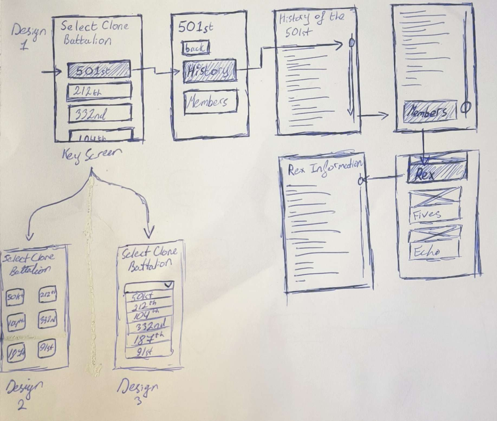

Wire Frames
User Task
The user task I am designing consists of the user selecting a clone trooper from the history of the battalion and not from the members list, the user must navigate the clone battalion histor y and click on the members button and then choose a member
User Flow

Wireframes
The very first screen is the key screen, and it is also the most succesful due to a simple and easy to navigate layout and big buttons
Reviewed by: Seán Kroczek